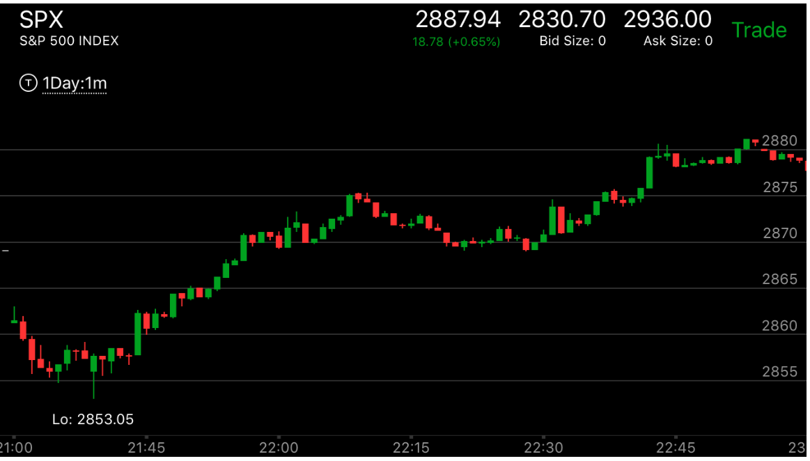
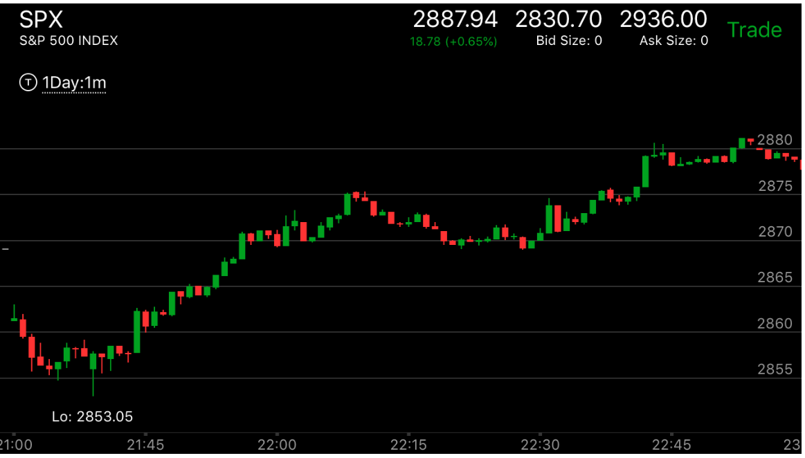

穿越反转走势
- 一个下跌走势当中，它每次反弹都原来低，到了一个点，它反弹更高，而下跌更低或者平齐，速度也比较快。
这样它形成了一个穿越形态。这个会导致一个完全的反转或者部分反转。上涨则相反。要注意它的前面低点是相对弱势
才会反转。
- 或者越过范围后，形成了两段走势，或者叠加走势，形成了反转。
下跌的时候，出现穿越反转走势
下跌的时候，出现穿越反转走势
TOP

图示：9:40出现了高点走平开始下跌，12：00它反弹更高，下跌更低，
速度很快。这样就反转了。
 

图示:盘前走势处于下跌，9:00的反弹比7：40的更高。下来速度更快。这样就反转了。
虽然没有创新低。开盘后，则不断走高。

图示：10：30冲高，反弹幅度超过原来高点，然后下来，下来越过2730
这个范围后，出现了两段下跌走势，反转了。

图示：7：20一个两段上涨走势，幅度超过前面的反弹，
拉回后，再次下跌，这次速度很快。越过了前面的低点。这样就反转了。